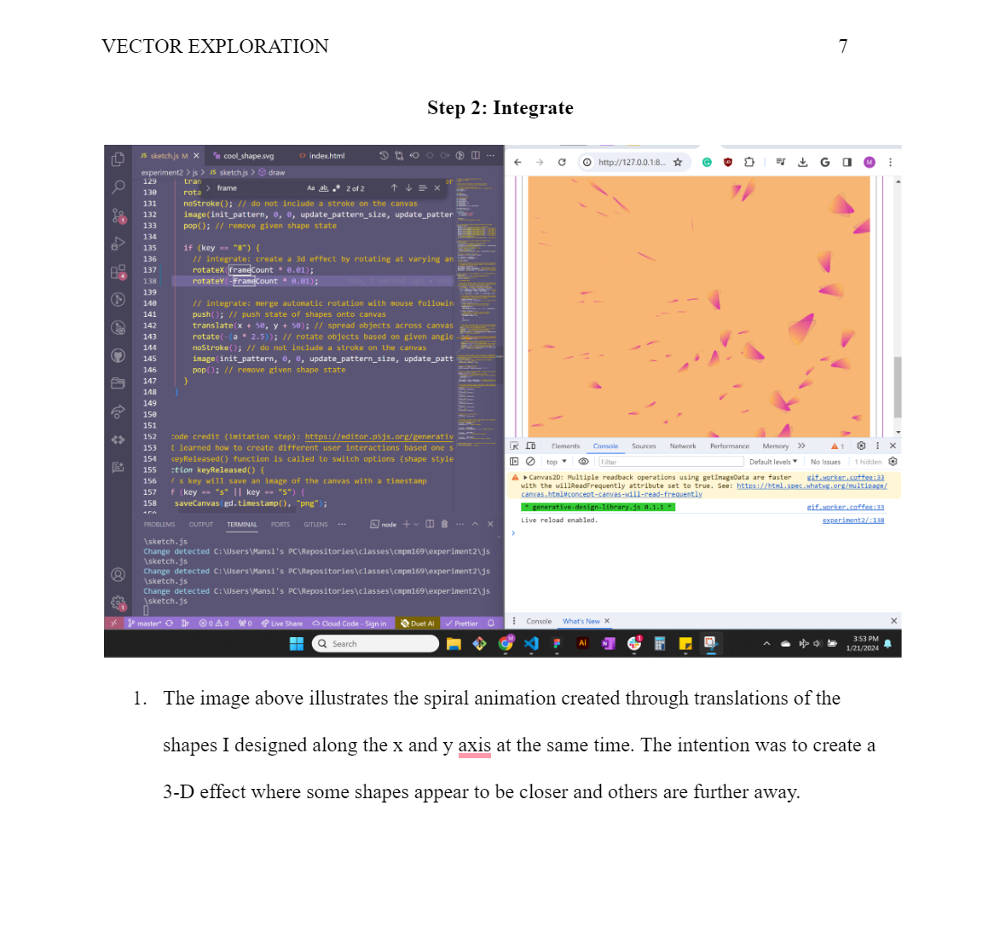

Experiment 2 - Vector Art, Animation & Interactivity
Imitate
To develop artistic creativity in coding, it can be helpful to start by studying and learning from existing examples. This might involve reviewing code written by others, analyzing successful techniques, or even copying and modifying code to better understand how it works. By imitating and learning from existing techniques and strategies, we can gain a better understanding of what has been done before and what is possible, and identify opportunities for improvement and innovation.
What code did you start with? (You don't need to provide the code itself, but where did you start?) Document this step briefly.
Integrate
After learning from existing techniques and strategies, we can build upon that foundation by combining elements from different sources. This might involve combining elements from different programming languages, using libraries or frameworks in new ways, or bringing together techniques from different fields or disciplines. By integrating and combining elements from different sources, we can create something new and unique.
How did you extend the code or combine with another technique to make something new? Document this step.
Innovate
Finally, we can introduce new or original ideas to our coding process by thinking creatively and pushing the boundaries. This might involve developing entirely new techniques or approaches, or using existing techniques in new and creative ways. By innovating and introducing new ideas, we can create art that is truly groundbreaking.
How did you use the code as a jumping off point to create something truly unique and novel? Document this step thoroughly.
Reflection
Each person that worked on the code should reflect on the process, the difficulties, and the successes of the experiment. Here's where you can put your reflections.
- What part of the project you contributed
- A reflection on your work and the work of the team
- Brief highs and lows
I worked on the project from start to finish. I experimented with the 3-d libraries and generative vectors/animation. I created three variations on the animations to allow the user to interact with the art piece itself. I included a depth perspective on the 3rd and 1st variation of the art piece to make the user feel like the lines and shapes are closer and further away.
I am happy with the final result of this project, and I liked the idea of experimenting with different libraries to see what I liked as the final result. I am glad that I split up this experiment over the week because I wanted to focus on a new style/option in my design each day.
Some highs from this project are that I successfully figured out how to create varying interactions based on the user's input, change the backgrounds as the user interacts with the pieces, and created a depth perspective where some shapes are closer and further away from each other on the screen (illusion). Some lows from this project are that I was struggling with creating changing colors randomly without messing with the 2-d interactions. I also had trouble modifying the 3-d depth perspective without messing with the 2-d animation. It took a while to debug, but I am happy with the final result.
Results
1. Try pressing s, g, or d
S or s will save a screenshot of the canvas with the timestamp. G or g will change how small or big the vectors are. D or d will change the thickness of the vectors
2. Press a number (1-3) to get started or reset the animation